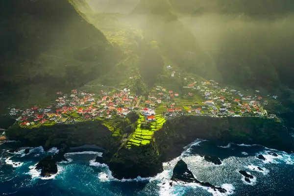

Home › Wine regions › Madeira
Madeira wine region

Photo: Maciej Marko on Unsplash
Steep volcanic Atlantic island far off Morocco, whose heat-aged, oxidative fortified wines are close to indestructible.
Hundreds of native grapes, famous for Port and dry Douro reds.
Climate and soil
Subtropical and humid, with mild winters and plenty of rain, especially on the cooler north side. Vines grow on narrow hand-built terraces (poios) cut into basalt and other volcanic soils, often trained on low pergolas, in tiny plots that make every harvest labour-intensive.
Key areas and appellations
Funchal and Câmara de Lobos (south coast), Estreito de Câmara de Lobos, São Vicente and Seixal (north coast), Porto Santo, DOP Madeirense (unfortified wines), IGP Terras Madeirenses
Good to know
Fermentation is stopped with grape spirit, then the wine is deliberately warmed: either in heated tanks (estufagem, used for younger blends) or slowly in casks stored in warm lofts (canteiro, used for the best wines). Sweetness tracks the noble grapes from driest to richest: Sercial, Verdelho, Boal (Bual), Malvasia (Malmsey). Tinta Negra is the workhorse grape. Age statements run from 3 to 50+ years; Colheita is a single-harvest wine aged at least 5 years, Frasqueira (Vintage) at least 20 years in cask. Thanks to the heat and oxidation, an opened bottle keeps for months.
The grapes of Madeira
- Tinta Negra (red): dried fig, caramel, walnut, orange peel. Best known in Madeira.
- Sercial (white): lemon, citrus peel, almond, walnut. Best known in Madeira.
- Verdelho (white): citrus, tropical, honey. Best known in Madeira, Australia.
- Malvasia (white): peach, floral, almond. Best known in Italy, Iberia.
Notable producers in Madeira
- Blandy's
- Henriques & Henriques
- Barbeito
- Justino's
- Pereira D'Oliveira
- H.M. Borges
- Cossart Gordon
Official appellations
| Appellation | Status | Style | Grapes |
|---|---|---|---|
| Madeira Fortified wines from the island of Madeira, heat-aged by estufagem or the slower canteiro method, from dry Sercial to rich Malmsey. | DOC | Fortified | Tinta Negra, Sercial, Verdelho, Boal, Malvasia |
Madeira wines to try
Blandy's 10 Year Old Malmsey Madeira
Rich yet tangy: toffee, dried fruit, orange peel and roasted nuts.
Food: Christmas cake, chocolate, hard cheese
Blandy's Bual Vintage (Frasqueira)
Madeira · Bual
Vintage Bual Madeira: toffee, dried fruit and tangy acidity.
Food: Fruit cake, nuts
Henriques & Henriques 15 Year Old Verdelho Madeira
Medium-dry Madeira with toffee, dried apricot, walnut and the tangy, cutting acidity that keeps it endlessly fresh.
Food: Consommé, mature hard cheeses
Food to try with Madeira wines
- Christmas pudding: Dried fruit, spice and brandy demand an intensely sweet, nutty wine; Malmsey Madeira, PX sherry or Rutherglen Muscat match its richness.
- Mince pies: Tawny Port, Muscat or Malmsey are sweeter than the mincemeat and echo its dried fruit, peel and spice, a classic Christmas sideboard match.
More wine regions in Portugal
The Wine Reference newsletter
New wines, stories and career guides, one email a week at most.
Over 18s only. Unsubscribe any time with one click. Your email is stored securely by Kit and never shared.
Support The Wine Reference
This guide is free, with no paywall. If it helped you choose a bottle, you can buy me a glass and keep it growing.
🍷 Buy me a glass